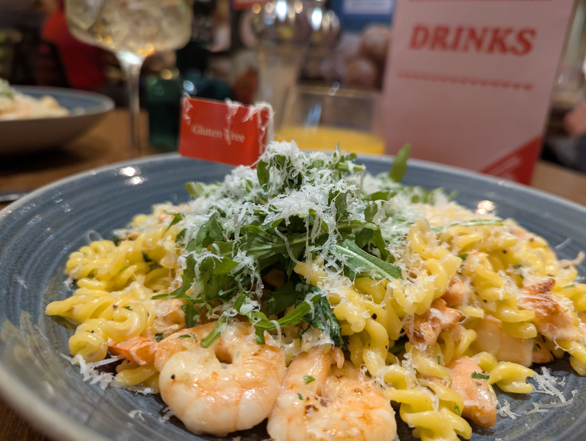
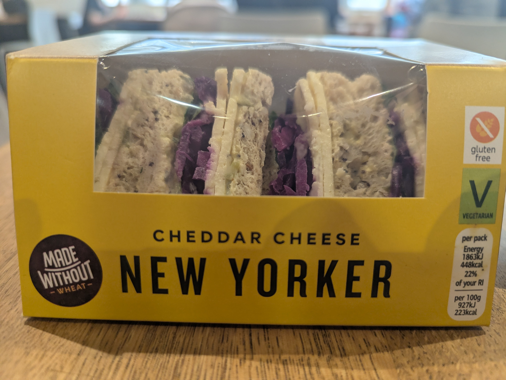

EATING OUT
Eating Out With IBS & a Gluten-Free Diet
Living with IBS while following a gluten-free diet can make eating out feel overwhelming, but it doesn't have to stop you enjoying meals with family and friends.


Don't let it ruin eating out. Places are getting so much better at catering for food allergies these days. Although gluten-free menus are often smaller than your friends' menus, there will almost always be something you can enjoy.
Most restaurants have their menus available online, so you can check in advance to see if they have something suitable for you. If you need something specific, don't be afraid to call ahead and speak to a member of staff. They are often very helpful and happy to answer any questions or make arrangements where they can.
After being diagnosed, the first time I went out for lunch with my mum was at Prezzo. The waiter asked if we had any food allergies and, as soon as I said I needed gluten-free food, he said, "That's fine," and brought over a different menu. It was very similar to my mum's menu, with just a few dishes removed. I had a really lovely gluten-free pasta dish, and it made me realise that eating out wasn't going to be as difficult as I'd feared.
Since then, I've been to a few different places for lunch and dinner, and I've generally had good experiences. Many menus are clearly labelled with gluten-free options, making it much easier to choose. Sometimes it can be a little disappointing when you fancy something like chips but can't have them because they're cooked in the same fryer as gluten-containing foods. Instead, you might have a jacket potato or boiled potatoes. Even so, there's usually something tasty to enjoy.
We recently stayed at Portmeirion for two nights and had dinner in the café, which served pasta, pizza and salads. When I booked the table, I mentioned that I needed gluten-free food. The waiter told me that, apart from two dishes, I could have everything on the menu. I chose mushrooms in a truffle sauce on bruschetta, and they simply swapped the regular bread for gluten-free bread. It was absolutely delicious, and I didn't feel like I was missing out at all.
At breakfast in the hotel, all I had to do was ask for gluten-free toast, and it was brought out without any fuss. The staff couldn't have been more accommodating, and the whole experience made eating away from home feel easy and enjoyable.
When it comes to lunch out, sandwiches are often the easiest option, but they can be quite hit and miss when you need gluten-free choices. I have had some really nice gluten-free sandwiches from Marks & Spencer, especially a simple cheese and tomato one, which feels like a safe and reliable choice. However, a lot of shops tend to focus on things like chicken and bacon, and for someone who doesn't like bacon, that can be really unhelpful.
Boots, for example, do a chicken and spinach sandwich, but sometimes it feels like there is more spinach than chicken, and it can give the impression that gluten-free options are just thrown together without much thought. At times it really does feel like people with dietary needs have been forgotten about, rather than properly catered for.
A few weeks ago, I was in London and walked past a Pret a Manger. I went in because it was lunchtime and I was hungry. I asked the girl who was filling up the shelves where the gluten-free sandwiches were, and the manager came over and said, quite bluntly, that they don't do them and why would they have that kind of bread there. I ended up leaving hungry and a bit frustrated.
In the end, I went to the Marks & Spencer café instead and had the best New Yorker sandwich, which completely made up for the earlier disappointment and reminded me that there are still places where you can get something really enjoyable and feel properly catered for.
Don't let eating out put you off. Restaurants are becoming much more aware of food allergies and gluten-free diets, and you'll usually find there is something you can enjoy. Remember, you're there to spend time with your friends and have a good time, not just for the food.
If a restaurant doesn't have enough suitable options, don't be afraid to suggest somewhere else. Most friends are understanding and will be happy to choose a place where everyone can eat comfortably. With a little planning and a bit of confidence, eating out can still be an enjoyable part of life. Just because you're gluten-free doesn't mean you have to miss out.
← Back to blogs